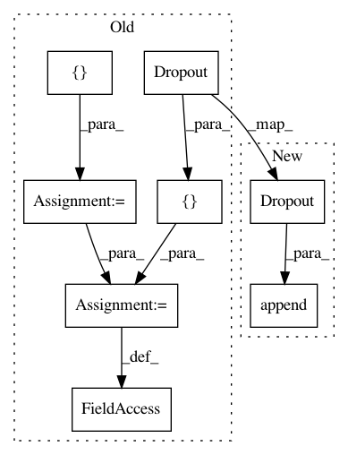

61228f3243eaee39cba31a9abd2afc6ead9612a8,implementations/pix2pix/models.py,UNetDown,__init__,#UNetDown#,10
Before Change
nn.LeakyReLU(0.2, inplace=True) ]
if normalize:
model += [nn.BatchNorm2d(out_size, 0.8)]
if dropout:
model += [nn.Dropout(dropout)]
self.model = nn.Sequential(*model)
def forward(self, x):
return self.model(x)
After Change
layers.append(nn.InstanceNorm2d(out_size))
layers.append(nn.LeakyReLU(0.2, inplace=True))
if dropout:
layers.append(nn.Dropout(dropout))
self.model = nn.Sequential(*layers)
def forward(self, x):
return self.model(x)
In pattern: SUPERPATTERN
Frequency: 4
Non-data size: 8
Instances
Project Name: eriklindernoren/PyTorch-GAN
Commit Name: 61228f3243eaee39cba31a9abd2afc6ead9612a8
Time: 2018-05-04
Author: eriklindernoren@gmail.com
File Name: implementations/pix2pix/models.py
Class Name: UNetDown
Method Name: __init__
Project Name: eriklindernoren/PyTorch-GAN
Commit Name: f4c14d1daf86c6c05d8d36c53bc8e7587f00c206
Time: 2018-05-14
Author: eriklindernoren@gmail.com
File Name: implementations/ccgan/models.py
Class Name: UNetDown
Method Name: __init__
Project Name: eriklindernoren/PyTorch-GAN
Commit Name: eea200bad437f6a87486c3ddb4b2f88b8c46acef
Time: 2018-04-25
Author: eriklindernoren@gmail.com
File Name: implementations/bicyclegan/models.py
Class Name: UNetDown
Method Name: __init__
Project Name: eriklindernoren/PyTorch-GAN
Commit Name: 61228f3243eaee39cba31a9abd2afc6ead9612a8
Time: 2018-05-04
Author: eriklindernoren@gmail.com
File Name: implementations/discogan/models.py
Class Name: UNetDown
Method Name: __init__